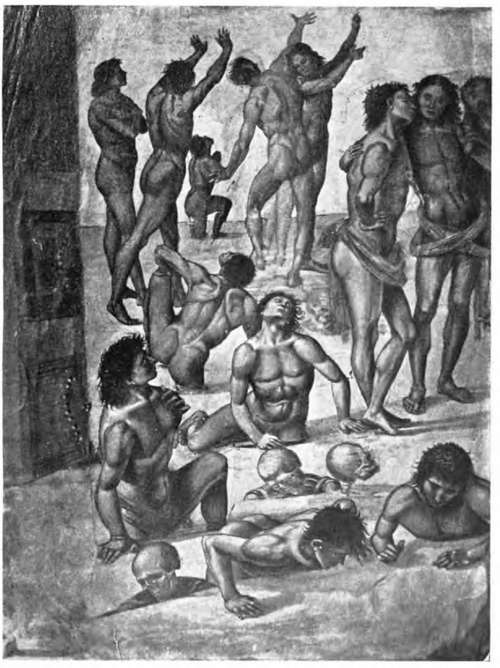

Keim's Process Foe Wall Painting. Part 2
Description
This section is from the book "Mural Painting", by F. Hamilton Jackson. Also available from Amazon: Mural Painting: -1904.
Keim's Process Foe Wall Painting. Part 2
* My thanks are due to the Council of the Society of Arts for kindly permitting me to make use of the papers referred to.
When it is dry, which will probably take nearly a year, the painting ground is laid on it. This is composed of the finest white quartz sand, marble sand (artificially prepared and free from dust), marble meal, and calcined fossil meal (infusorial earth). The sand composed of these materials, carefully mixed in proper proportions, is mixed with quicklime slaked with distilled water in the proportion of eight parts of sand to one part slaked lime. It is applied as thin as possible, one-eighth to one-quarter of an inch deep. For work on the exterior of buildings the addition of pumice sand is recommended. Sir Roberts-Austen said that the rough cast must be thoroughly wetted with distilled water, and that if the plasterer rubs it after it is dry the surface will be rotten. The reason for using distilled water is that any admixture of lime would affect the fixing solution. Marble sand (carbonate of calcium in a crystalline form) has been proved by experiment to add greatly to the firmness of the mortar, and the infusorial earth (a form of silica) has a double consolidating effect—first mechanically, cementing and binding together the coarser particles with the lime; second, by forming to some extent with the lime a silicate of calcium, such as afterwards results from the addition of the water-glass.
From Luca SignorelWs fresco of the Resurrection.
Cappella Nuova, Orvieto Cathedral.
When this layer has dried for several days—the Rev. J. A. Rivington says when the mortar is perfectly dry down to the brickwork or stone of the wall—a crust of carbonate of lime is formed on the surface, which is removed by an acid supplied by the Munich firm, diluted with three measures of distilled water (hydrofluo silicic acid). This is brushed upon the walls twice in succession by a slow, regular movement from a large hoghair brush, to open the pores of the walL It is then allowed to dry for twenty-four hours, after which it may be washed twice with distilled water. The hardening fluid supplied from Munich is then applied diluted with two measures of water. A varnish brush about three inches wide is used for the purpose, and is lightly and evenly drawn over the surface. Drops must not be allowed to run down, and there must be no retouching. This fluid is silicate of potassium. The wall is allowed to dry for twenty-four hours, and the application is repeated. Ceilings may be sprayed, but a glass spraying-can must be used for the acid solution. In places where the ground is uneven it is better to dilute with four measures of water and brush over the surface twice in succession and repeat the process in the same manner. The ground may be rough or smooth according to taste; the smooth is more difficult to fix, as being less perfectly absorbent. It can be made of any tint and can be applied to other materials if it be wished that the decoration should be removable, such as stone, tile, slate, wire gauze, glass, and even canvas, which can be rolled with perfect safety. Sir Roberts-Austen says it is, normally, pure white; when struck or scratched it should ring like a stone (and sparks may even be struck from it with steel), if rubbed with the finger no little grains should be detached, and water thrown on it should be quickly and evenly absorbed. It is then ready for painting on, but may remain for years before receiving colour. Should the presence of any hollow spots be detected by sounding (caused by non-penetration of the fluids) they must be cut out with a sharp knife down to the rough cast and replaced, following the same process. Professor Church says that oxide of zinc may be advantageously substituted for a part of the lime in the intonaco, and it may be added to the pigments. Also that fine asbestos paper, wetted with lime-water and firmly pressed by rolling into a soft freshly laid lime and sand plaster, makes an excellent ground for stereochrome painting; but as a single breadth only can be used, the size of a painting on such a ground is limited. It is most important that the wall should be thoroughly dry and the materials used quite pure. In order to learn whether a wall surface is dry, Professor Church recommends the gelatin test. " Hold a piece of coloured sheet gelatin closely against the wall by a stick pressed against the centre. If the wall be moister than the air the sheet will curl outwards".
The colours used are treated beforehand with alkaline solutions (of potash or ammonia), to anticipate any change of hue from the alkaline liquids which form the fixative. In addition to this they are prepared with other substances, such as oxide of zinc, carbonate of baryta, felspar, powdered glass, etc., as required by the peculiar properties of each, to obviate all danger of chemical change taking place. The Eev. J. A. Bivington said that at that time thirty-eight colours had been prepared; four varieties of white, six of ochre, two of sienna, ten of red, two of brown umber, two of Naples yellow, two of ultramarine, five of green, three of black, and cobalt blue. Cadmium was to be added. The whites were " zinc white and baryta white, oxide of zinc and artificial sulphate of barium. The latter is less dense, and useful for lightening colours without much damaging their transparency. The ochres and siennas are combinations of oxy-hydrates of iron, calcium, alumina, magnesia, and silica, the colour is due to their being subjected to the influence of heat for a longer or shorter time. The reds are chiefly oxides. The chrome is a sub-chromate of lead. The umber is oxide of iron and manganese combined with silica. The Naples yellow is a compound of oxide of lead and antimony or antimoniate of lead. The ultramarine is artificial, and consists of silica, alumina and sulphate of sodium. The cobalt is protoxide of cobalt compounded with alumina. The cobalt green is the same material in combination with oxide of zinc. The terre verte is chiefly silicic protoxide of iron, and also contains magnesia, alumina, and potash. The chrome oxide green is oxy-hydrate of chromium. All are equally acted upon by the fixing solution." By the time that Sir Roberts-Austen delivered his paper the number of pigments available had increased to forty-five, and he said that all the colours were clear and bright. The colours which cannot be used with the alkaline fixative, such as vermilion, aureolin, the chromates, cadmiums, and madders, are replaced by red lead, chrome red, and uranium yellow.
Roundels from the ceilina of the Collegio del Cambio* Peruaia. Bv Peruaino.
Continue to:
- prev: Keim's Process Foe Wall Painting
- Table of Contents
- next: Keim's Process Foe Wall Painting. Part 3